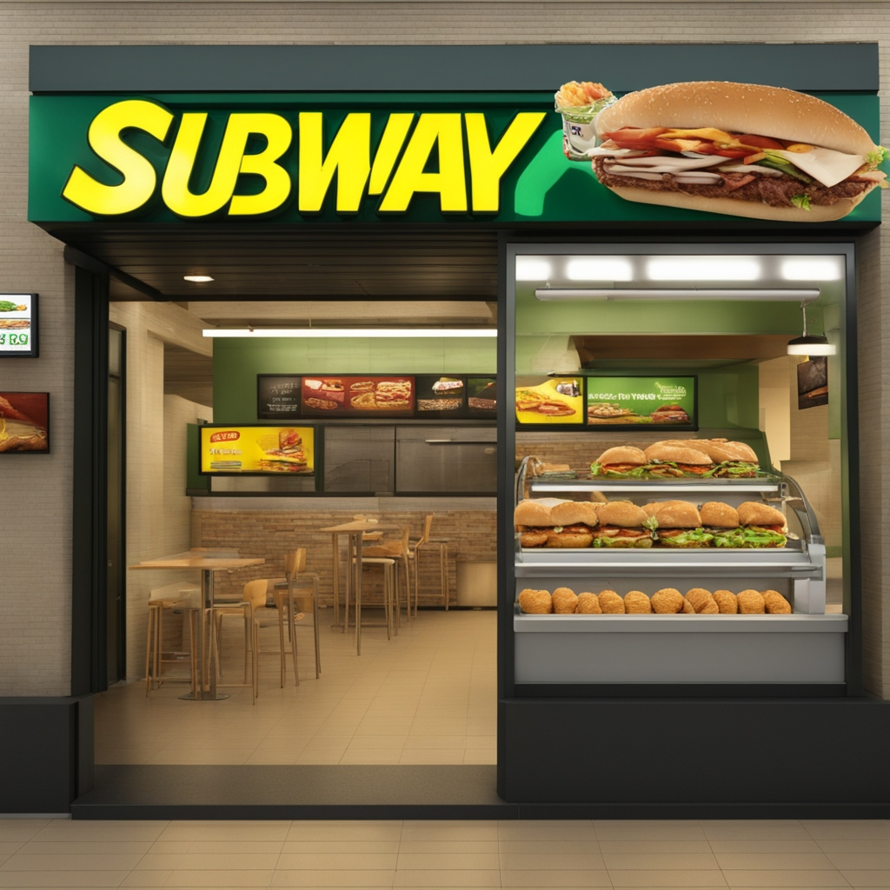
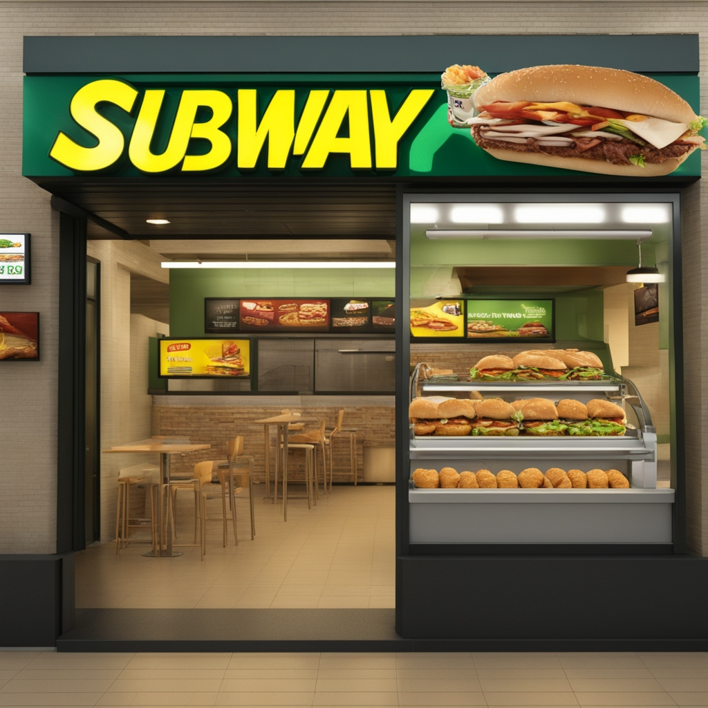

Mcdonalds
The company's success is a result of its efficient operating model, focus on franchising, and ability to leverage its scale to negotiate better prices for ingredients and supplies, in addition, mcdoanlds continue to to be number 1 fast food restaurant because of the food quality and its service, these are key to improve their company on a whole and they are still improving till this day, We serve delicious food people feel good about eating, with convenient locations and hours and affordable prices, and by working hard to offer the speed, choice and personalization our customers expect, The enduring success of McDonald's can be attributed to its unwavering commitment to consistency, its ability to adapt to local tastes and cultures, and its dedication to innovation and adaptability. These three key factors have allowed McDonald's to maintain its status as a global fast-food giant for decades, The food at McDonald's has been designed to taste as good as possible; there are scientists whose literal job it is to make sure you want to take another bite of your Big Mac. McDonald's food is at the height of hyperpalatability: It's so full of salt, fat and sugar that our bodies struggle to turn it down.
KFC
The chicken is traditionally deep-fried, which results in a crispy exterior and tender, juicy meat inside. The frying process helps seal in the natural juices of the chicken while creating a delightful contrast of textures, these are all evident because of the taste that you feel when biting into the chicken, Kfc has texture and flavour with its chicken and that is what makes kfc so good, The Chicken Is Hand-Breaded To Maximize Freshness Many fast food restaurants use food that's completely prepared off-site, but KFC takes the time to bread its fried chicken the old-fashioned way: by hand. Breading chicken by hand requires more time and effort, but the results are worth it, Kfc is not onlky knowan for there flavourful and textured chicken but there chicken sandwhichs and there one and only popcorn chicken which is basically chicken bites but more crispy and the gravy contains ingredients that incentivises customers to keep going back to kfc, The chicken is traditionally deep-fried, which results in a crispy exterior and tender, juicy meat inside. The frying process helps seal in the natural juices of the chicken while creating a delightful contrast of textures. Another factor that contributes to KFC's appeal is the concept of “umami” or savory taste.

Domino's
It uses a bread based dough that has a high gluten content for their crust, most of their competitors use a traditional dough that is lower in gluten. The gluten content of a dough is what makes it able to stretch out when being slapped out, and gives it a soft chewy bread like texture when baked, Alt conducted a taste test pitting Papa Johns' and Domino's thin crust against each other. He concluded that “While Papa John's might be a bit more substantial, Domino's simply tastes better,” because it wasn't shouldered with the former's sickly sweet tomato sauce, There are four major factors that makes Domino's so different and successful compared to its direct competitors and the restaurant industry at large: Mastery of its supply chain and network allowing low costs. A peerless delivery and customer service. A focus on technology. Domino's concist of many different aspects and thats not only it, the product its self aswell, both service and product is luxary and this attracts customers to continue going to Domino's because of hwo high quality there service and their food product, Domino's came from humble beginnings in 1960, with just one store. Now, as the largest pizza company in the world, Domino's proudly continues its legacy of delivering great-tasting pizza to customers' doors.
Burger King
Every day, more than 11 million guests visit Burger King restaurants around the world. And they do so because our restaurants are known for serving high-quality, great-tasting, and affordable food, Our restaurants drive product excellence through top-tier food and beverage quality. Guests know they can rely on BK for innovative products with consistently great taste and excellent value, It is the second largest hamburger chain in the United States, after McDonald's, and one of the most successful brands in fast-food history. In the early 21st century, Burger King claimed to have about 14,000 stores in nearly 100 countries. Headquarters are in Miami, Florida, Whoppers — and all Burger King burgers, for that matter — stand out compared to other chains given the fact that they're flame-grilled, giving their burgers a distinct smoky flavor, Founded in 1954, BURGER KING® is the second largest fast food hamburger chain in the world. The original HOME OF THE WHOPPER®, our commitment to premium ingredients, signature recipes, and family-friendly dining experiences is what has defined our brand for more than 50 successful years.
 

Subway
SUBWAY® is the undisputed leader in fast, healthy food. Our easy-to-prepare sandwiches are made to order right in front of the customer, precisely the way they want - using freshly baked breads, select sauces and a variety of delicious toppings, As one of the world's largest quick service restaurant brands, Subway serves freshly made-to-order sandwiches, wraps, salads and bowls to millions of guests, across more than 100 countries in nearly 37,000 restaurants every day, It's quick, cheap, and practical. Why do people eat fast food? Why do people use subways? Because it's fast, cheap and convenient, Subway is also contains healthy options for your meal and that is good as it can benefit your health and also make you full, Unlike much of the fast food sold by restaurant chains, Subway products are typically not fried and are liberally garnished with fresh vegetables. Subway therefore is able to brand itself as a purveyor of healthier fast food, First and foremost, one of the primary advantages of subway systems lies in their capacity to efficiently transport large volumes of passengers across densely populated urban areas. Unlike surface-level transportation modes like buses or cars, subways operate on dedicated tracks, free from traffic congestion.